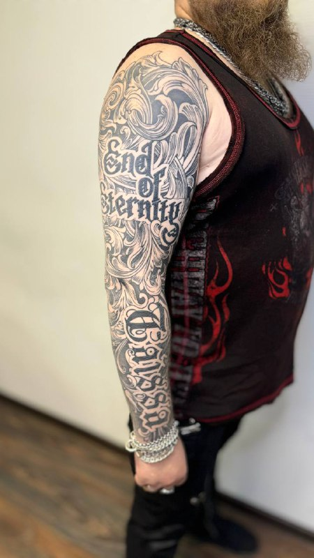
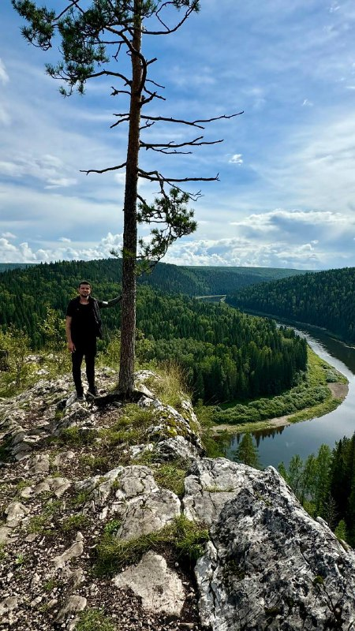
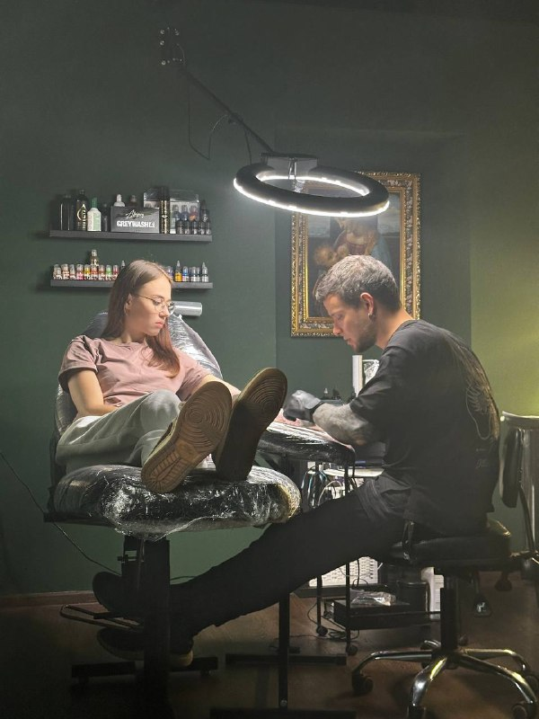
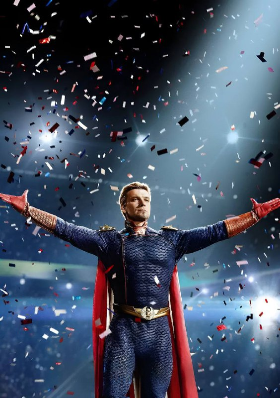

Татуировки
Орнаментал, реализм, леттеринг, чёрно-белые и цветные работы любой сложности. Парные тату, рукава, закрасы.

Art on skin
Сергей Фомин — профессиональный тату-мастер с персональным подходом к каждому клиенту. Авторские эскизы, экстремальная детализация и работы, которыми не жалеют.
От первого эскиза до зажившей работы — полный цикл создания татуировки вашей мечты.
Орнаментал, реализм, леттеринг, чёрно-белые и цветные работы любой сложности. Парные тату, рукава, закрасы.
Разработка индивидуальных и эксклюзивных эскизов с учётом анатомии, стиля и вашей истории.
Безопасное удаление и осветление неудачных татуировок. Возможность перекрытия старой работы новой.

@sergio_fom · Пермь
Я — Сергей Фомин, тату-мастер из Перми. Участник и призёр фестиваля «Пигменты» в номинациях орнаментал, реализм, цветная и чёрно-белая татуировка. Каждая работа — это история, которую мы создаём вместе.
«Как бы ни складывались обстоятельства, ваша кожа — холст бесконечных возможностей. Наносите только те сюжеты, которые радуют вас.»Узнать больше
Свежие и зажившие татуировки. Больше работ — в Instagram и Telegram.


Готовые эскизы для татуировки или индивидуальная разработка под вашу идею.

Геометрия и орнамент · предплечье

Black & Gray · плечо или грудь

Изящное решение для запястья
Разработаю с нуля под вашу идею